Arcade Machine Cores
The MEGA65 can also be turned into an arcade game machine. As many early arcade games rely on fast reaction times, an FPGA-based recreation is much more faithful than software emulation. Unfortunately, arcade games usually require a complete FPGA slot for a single game.
Important Details about Arcade Games
To recreate the game two parts are needed: An FPGA Core and image files for the ROMs. The Core is like a Core for a home computer and only has the “hardware” part of the machine. It still requires the actual software, which is a seperate file, even if the Core can only play one specific game. Arcade Game ROMs are available in many flavours on internet, but the Core usually requires a very specific format. You need to read the instructions per Core very carefully and follow them to the letter to create the correct files. This in some cases requires Python on your computer. Due to copyright and licensing reasons, there is no official archive where Cores and ROMs sre bundled ready to use.
Some Arcade Machine Cores support “DIP Switches”. This refers to the switches on the arcade board itself and these are shown on screen. Do not open the MEGA65 to change the DIP switches inside.
The Cores on this page are sorted in reverse chronological order of Core release. The newest releases are on top, the oldest on the bottom. By this you can see if there is something new.
Cores Available for all MEGA65
Bank Panic
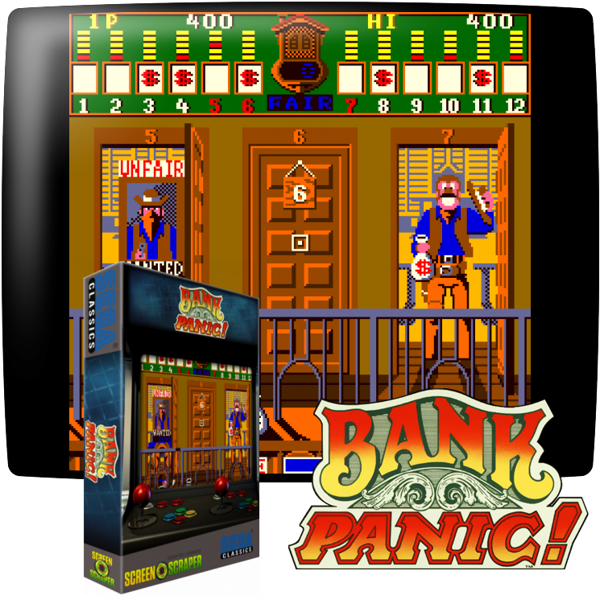 Bank Panic is an Arcade game by Sega from 1984.https://en.wikipedia.org/wiki/Bank_Panic
Please follow the exact installation instructions from here:
https://github.com/sho3string/BankPanicMEGA65_R3_R6
Download the Core from the MEGA65 filehost here:
https://files.mega65.org/?id=36b41376-b2c6-45e6-a441-cd126357fdd4
Bomb Jack
 Bomb Jack is an Arcade game by Tecmo from 1984.
Bomb Jack is an Arcade game by Tecmo from 1984.https://en.wikipedia.org/wiki/Bomb_Jack
Please follow the exact installation instructions from here:
https://github.com/sho3string/BombjackMEGA65
Download the Core from the MEGA65 filehost here:
https://files.mega65.org/?id=f3ddcbd5-a6c1-42cd-aa9c-db25dfd71c90
Burnin Rubber
 Burnin Rubber is an Arcade game by Data East from 1982. Outside of Japan it is called **Bump 'n' Jump**.
Burnin Rubber is an Arcade game by Data East from 1982. Outside of Japan it is called **Bump 'n' Jump**.https://en.wikipedia.org/wiki/Bump_%27n%27_Jump
Please follow the exact installation instructions from here:
https://github.com/sho3string/BurningRubberMEGA65
Download the Core from the MEGA65 filehost here:
https://files.mega65.org/?id=6a96f6de-2673-40c0-9304-5720fe8ce144
Please note that the Core does not support the US version of this arcade game, called Bump’n’Jump.
Dig Dug
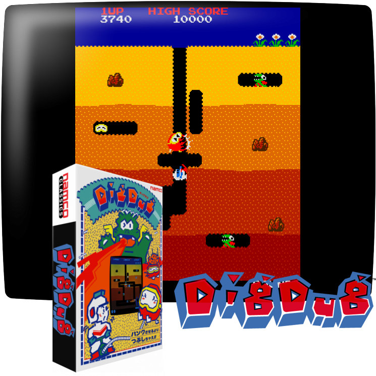 Dig Dug is an Arcade game by Namco from 1982.https://en.wikipedia.org/wiki/Dig_Dug
Please follow the exact installation instructions from here:
https://github.com/sho3string/DigDugMEGA65_R3_R6
Download the Core from the MEGA65 filehost here:
https://files.mega65.org/?id=b5fb8733-4850-403c-a7dc-3e9a84a44b0c
Galaga
This core requires different downloads based on your MEGA65 revision.
 Galaga is an Arcade game by Namco from 1981.
Galaga is an Arcade game by Namco from 1981.https://en.wikipedia.org/wiki/Galaga
Please follow the exact installation instructions from here:
https://github.com/sho3string/GalagaMEGA65
Download the R3 Core from the MEGA65 filehost here:
https://files.mega65.org/?id=8bc248e3-c29c-4ba8-b8c3-6018a995a9ea
Download the R6 Core from the MEGA65 filehost here:
https://files.mega65.org?id=1672149c-66d3-4df7-9128-e9c83095c49a
Galaxian
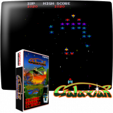 Galaxian is an Arcade game by Namco from 1979.https://en.wikipedia.org/wiki/Galaxian
Please follow the exact installation instructions from here:
https://github.com/sho3string/GalaxianMEGA65_r3_r6/
Download the Core from the MEGA65 filehost here:
https://files.mega65.org?id=f024a865-8751-4292-ac66-439daa696ad6
Gaplus
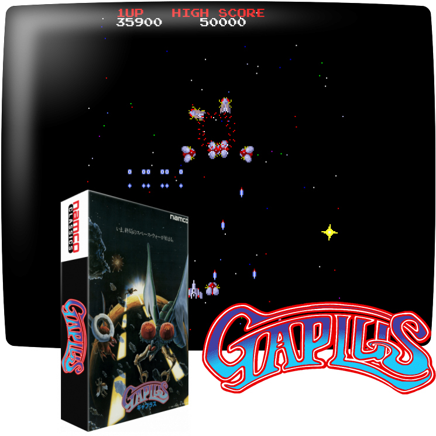 Gaplus is an Arcade game by Namco from 1984.https://en.wikipedia.org/wiki/Gaplus
Please follow the exact installation instructions from here:
https://github.com/sho3string/GaplusMEGA65_R3_R6
Download the Core from the MEGA65 filehost here:
https://files.mega65.org?id=a87ab90e-06bc-40bb-8257-6988345d7784
Ghosts ‘n Goblins
This core requires different downloads based on your MEGA65 revision.
 Ghosts 'n Goblins is an Arcade game by Capcom from 1985.
Ghosts 'n Goblins is an Arcade game by Capcom from 1985.https://en.wikipedia.org/wiki/Ghosts_%27n_Goblins_(video_game)
Please follow the exact installation instructions from here:
https://github.com/sho3string/GnGMEGA65
Download the R3 Core from the MEGA65 filehost here:
https://files.mega65.org/?id=e563df76-e12f-47de-9bb2-cca4ebe1e18d
Download the R6 Core from the MEGA65 filehost here:
https://files.mega65.org?id=f66965dc-4006-4ebe-8fde-eed9bc60d3aa
Green Beret / Rush’n Attack
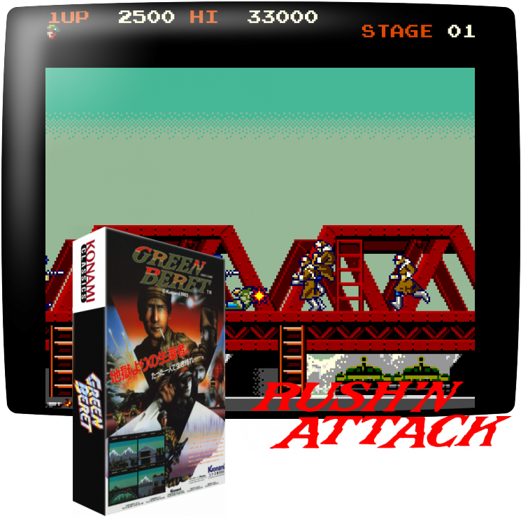 Rush'n Attack, known as Green Beret in Europe, is an Arcade game by Konami from 1985.https://en.wikipedia.org/wiki/Rush%27n_Attack
Please follow the exact installation instructions from here:
https://github.com/sho3string/RushnAttackMEGA65_r3_r6
Download the Core from the MEGA65 filehost here:
https://files.mega65.org/?id=9c83c178-f55c-4ce2-8d0f-1aacd5ae70b4
Gyruss
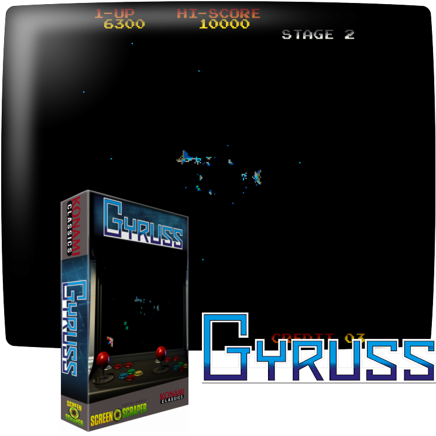 Gyruss is an Arcade game by Konami from 1983.https://en.wikipedia.org/wiki/Gyruss
Please follow the exact installation instructions from here:
https://github.com/sho3string/GyrussMEGA65_R3_R6
Download the Core from the MEGA65 filehost here:
https://files.mega65.org?id=c1486390-3264-4027-8131-552a785cac33
Moon Patrol
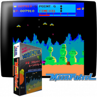 Moon Patrol is an Arcade game by Irem from 1982.https://en.wikipedia.org/wiki/Moon_Patrol
Please follow the exact installation instructions from here:
https://github.com/sho3string/MoonPatrolMEGA65_r3_r6
Download the Core from the MEGA65 filehost here:
https://files.mega65.org?id=4a864fa1-5d65-4dd9-a5ef-dd7ce07114e8
Pitfall II
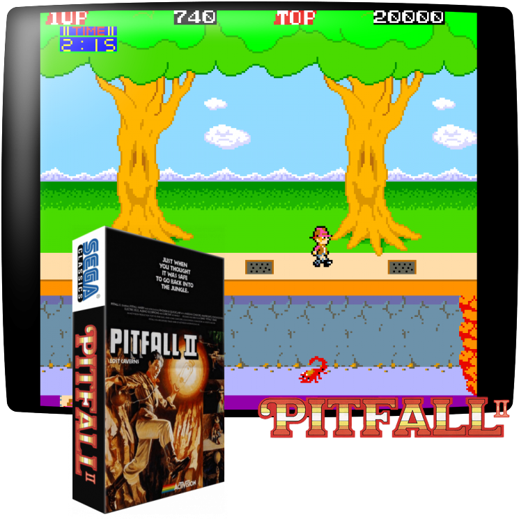 Pitfall II is an Arcade game by Sega from 1985. It is based on (but quite different to) the Pitfall-games for the Atari 2600 and C64.https://en.wikipedia.org/wiki/Pitfall_II:_Lost_Caverns_(arcade_game)
Please follow the exact installation instructions and download the Core from here:
https://files.mega65.org?id=d1dce404-d484-472a-87ab-21755979d2fa
Stargate
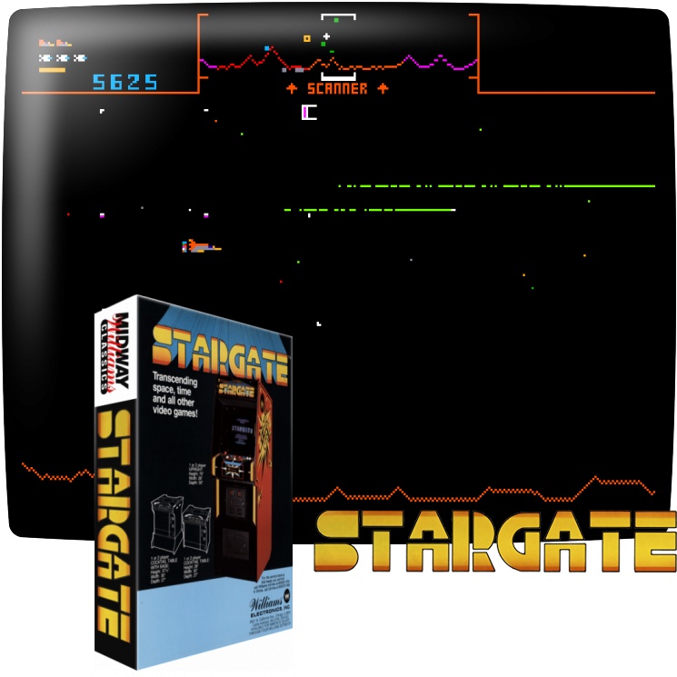 Stargate is an Arcade game by Williams from 1981.https://en.wikipedia.org/wiki/Stargate_(1981_video_game)
Please follow the exact installation instructions from here:
https://github.com/sho3string/StargateMEGA65_R3_R6/blob/Stargate_R3_R6/README.md
Download the Core from the MEGA65 filehost here:
https://files.mega65.org?id=fb977a9b-3979-4420-99f2-c683f52070b7
Up’n Down
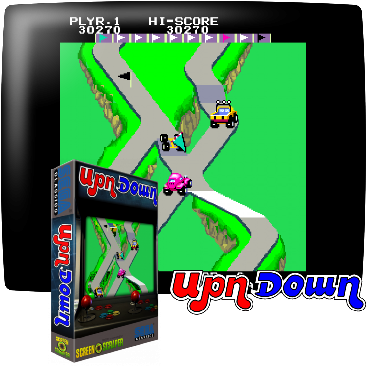 Up'n Down is an Arcade game by Sega from 1983.https://en.wikipedia.org/wiki/Up%27n_Down
Download the Core (and read the instructions) from the MEGA65 filehost here:
https://files.mega65.org?id=dfadf67d-b55f-4c4d-8cb5-c903161e0668
Wonder Boy / Sega System 1
 Wonder Boy is an Arcade game by Sega from 1986.
Wonder Boy is an Arcade game by Sega from 1986.https://en.wikipedia.org/wiki/Wonder_Boy_(video_game)
Please follow the exact installation instructions from here:
https://github.com/sho3string/SEGASYS1MEGA65
Download the Core from the MEGA65 filehost here:
https://files.mega65.org/?id=7365cb17-4375-45d3-a833-a89a38266c5e
This core potentially can run other games created for the Sega System 1, but the current release only supports the game Wonder Boy.
Wonder Boy: Monster Land
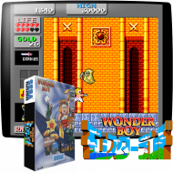 Wonder Boy is an Arcade game by Sega from 1987.https://en.wikipedia.org/wiki/Wonder_Boy_in_Monster_Land
Please follow the exact installation instructions and download the Core from here:
https://files.mega65.org?id=77da28bd-99e0-4853-bd38-5e880078bc6d
Xevious / Super Xevious
This core requires different downloads based on your MEGA65 revision.
 Xevious is an Arcade game by Capcom from 1985.
Xevious is an Arcade game by Capcom from 1985.https://en.wikipedia.org/wiki/Xevious
Please follow the exact installation instructions from here:
https://github.com/sho3string/XeviousMEGA65
Download the R3 Core from the MEGA65 filehost here:
https://files.mega65.org/?id=d32474e9-6f30-48f8-bba3-167cad4bbc4f
Download the R6 Core from the MEGA65 filehost here:
https://files.mega65.org?id=c67076de-8dd5-4877-8c95-7a01d2cae441
Please note that this Core supports several versions of the game, including the releases from Atari for the USA as well as Super Xevious.
Cores Available only for R3 MEGA65
Elevator Action (R3 only)
This core currently is NOT AVAILABLE for the R6 MEGA65
 Elevator Action is an Arcade game by Taito from 1983.
Elevator Action is an Arcade game by Taito from 1983.https://en.wikipedia.org/wiki/Elevator_Action
Please follow the exact installation instructions from here:
https://github.com/sho3string/ElevatorActionMEGA65
Download the Core from the MEGA65 filehost here:
https://files.mega65.org/?id=e2ee129d-149c-4b59-9ced-d21185878091
Bosconian (R3 only)
This core currently is NOT AVAILABLE for the R6 MEGA65
 Bosconian is an Arcade game by Capcom from 1985.
Bosconian is an Arcade game by Capcom from 1985.https://en.wikipedia.org/wiki/Bosconian
Please follow the exact installation instructions from here:
https://github.com/sho3string/BosconianMEGA65
Download the Core from the MEGA65 filehost here:
https://files.mega65.org/?id=96dd324b-d611-4252-bea4-0dbc4eb899ae
Sources
All screenshots on this page are sourced from https://screenscraper.fr